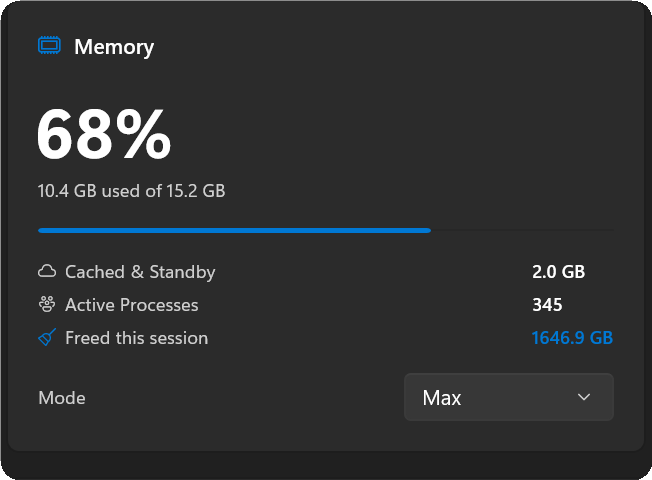

optiSYS
Keeps your PC responsive and your connection steady in the background.

What it does
- MemoryIt frees cached memory when RAM gets tight, so the machine stays usable under load.
- BatteryIt polls less when you are unplugged and leaves your Windows power settings alone.
- Wi-FiIt stops background Wi-Fi scanning while you are connected, which keeps latency steady.
Get optiSYS
Windows 10 (1809+) or 11 · Free & open source